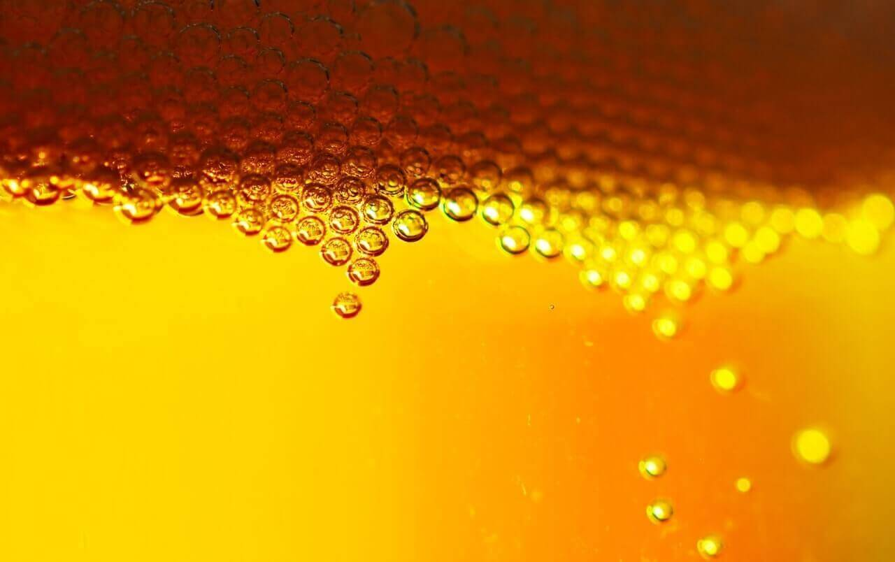

La cerveza artesanal forma parte de las tendencias turísticas de los últimos años. El turismo cervecero ya no solo se centra en su venta en pintorescos locales en grandes ciudades y pequeños poblados, sino que también surgen nuevas experiencias para los amantes del lúpulo y la cebada, como los tours guiados con catas, o los spas que ofrecen tratamientos con esta bebida.
El concepto de beercations llama la atención de miles de turistas, y gira en torno a la planificación de un viaje exclusivo con la cerveza como eje temático. Y cada vez más hoteles temáticos de esta bebida abren sus puertas.
La marca de cervezas artesanales abrirá a principios de 2019 un hotel de 26 habitaciones al lado de su cervecería en Escocia para los huéspedes que buscan unas vacaciones con lúpulo.
Sería el sueño de Homer Simpson, porque la empresa anuncia que en el habrá grifos de cerveza en el dormitorio y una nevera en la ducha.

Así sería la nevera en la ducha cargada con cervezas de varias denominaciones.
se encuentra en la ciudad bávara de Erding. El patrimonio cervecero de este hotel data de 1537, y desde 1886 el sitio ha sido la sede de Erdinger Weissbräu, considerada como la sede más grande del mundo de esta cerveza elaborada con trigo.
El hotel ofrece la Suite Brewers, equipada con mobiliario hecho con barriles de cerveza. Los visitantes, además de poder realizar un tour por la fábrica, pueden disfrutar de la cocina típica bávara del restaurante, atendidos por un personal vestido con trajes tradicionales de Bavaria.
Zum Erdinger Weißbräu es un hotel temático que refleja la cultura bávara.
El está situado cerca del bosque de Turingia, en lo que se conoce como el “corazón verde” de Alemania. El hotel funciona en la antigua fábrica de cerveza Felsenkeller, construida en 1866 y estuvo activa hasta 1992.
En la pequeña ciudad de Arnstadt todavía se elabora cerveza, y el hotel ofrece diferentes visitas a las plantas que revelan la historia de la localidad y los secretos de elaboración de la cerveza.
Catas de cervezas de Arnstadt en el Hotelpark Stadtbrauerei.
El Caribe también tiene su rincón cervecero. Las aguas cristalinas y la frondosa selva tropical de la Península de Yucatán sirven de marco para la degustación de cinco variedades que ofrece el complejo.
Los huéspedes, además de aprender a catar las cervezas artesanales, tienen la oportunidad de degustar insectos. Sí, las bebidas son acompañadas (si así se desea) por saltamontes secos, hormigas cortadoras de hojas y huevos de hormiga, que sirven de relleno para hacer tacos bañados con salsa picante.
El resort del Caribe ofrece catas de cervezas...y de insectos.
Dentro de este hotel de lujo se albergan siete edificios, dentro de los cuales hay un monasterio y una cervecería. Con 101 lujosas habitaciones, El ofrece además un spa de cervezas y un bar especializado en la bebida.
Precisamente en el monasterio funciona el Refectory Bar 1887, donde se puede beber una cerveza elaborada a partir de una antigua receta creada en 1352 por los monjes agustinos.
Un complejo histórico sirve como sede del Hotel Augustine .
En el Lejano Oriente también funciona un hotel cervecero, aunque el bar en el que sirven sus bebidas artesanales es de estilo australiano. El maestro cervecero residente, Leon Mickelson, ofrece seis cervezas artesanales y una sidra a los huéspedes del.
Los visitantes del hotel pueden tomar un tour con cata de las seis marcas artesanales por las instalaciones del bar, y aprender de la mano de Mickelson el proceso de fermentación y preparación.
El bar del Kerry Hotel, donde las cervezas de autor de Leon Mickelson son las protagonistas.
ofrece 40 habitaciones, repartidas en seis edificios. El hotel cuenta con una serie de actividades al aire libre en relación con la cerveza. Varios fines de semana al año se realizan eventos especiales, que incluye una experiencia práctica sobre cómo preparar la bebida en la cervecería del lugar. La jornada termina con una cena de celebración de maridaje de cervezas.
Uno de los bares del Woodstock Inn Station & Brewery que ofrece catas de su cervecería.